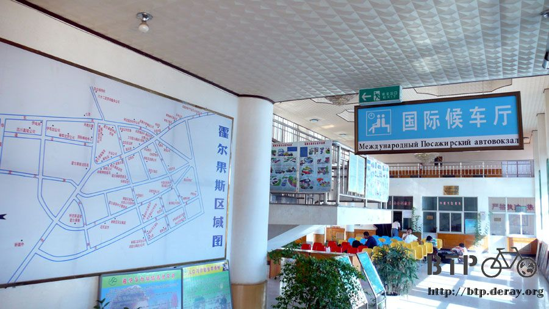
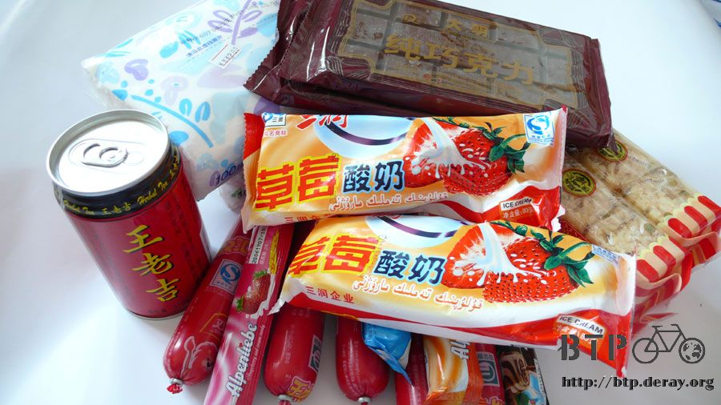
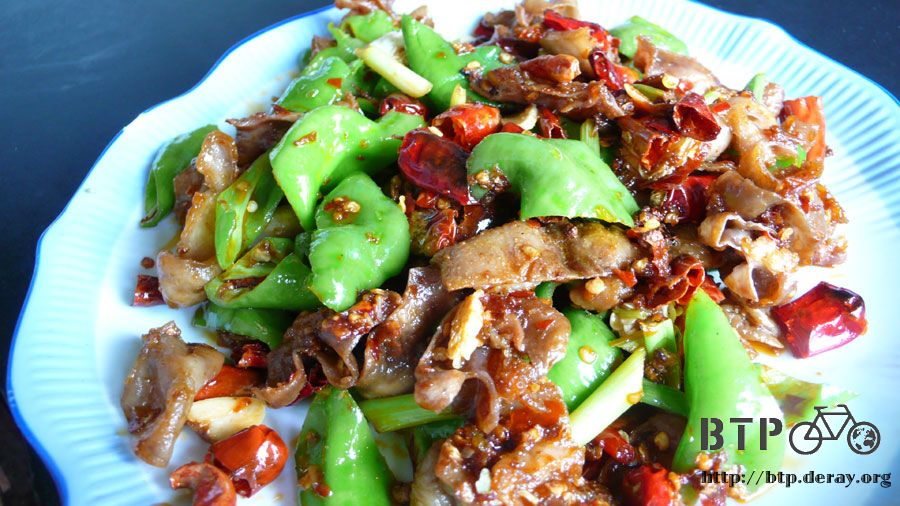
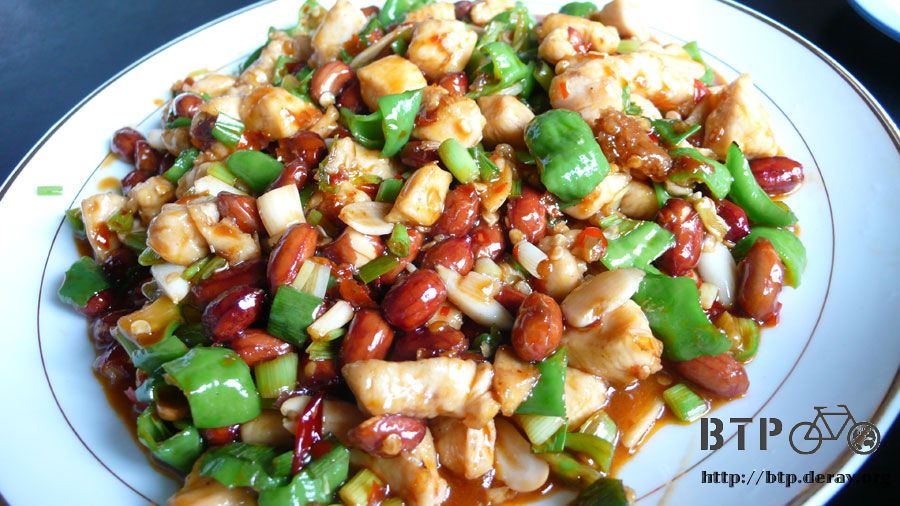
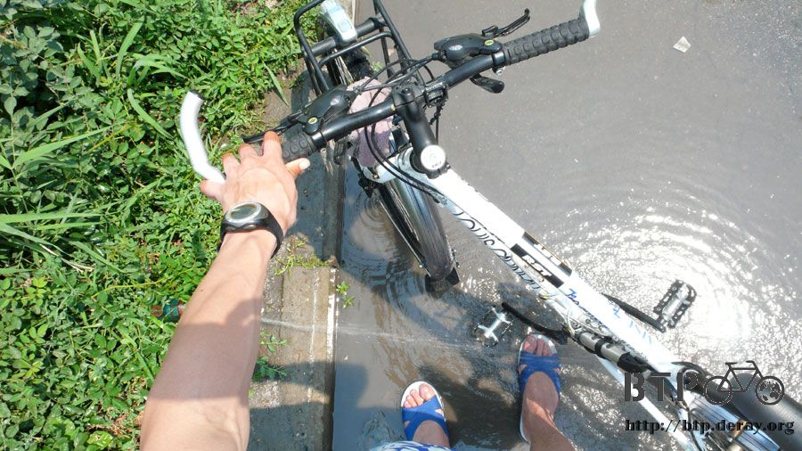

Pack up and ready to take off
The owner of the hotel said that the custom will not open on Sunday.
However, I still went to Huoerguosi again to validate that information.
Several drivers and the bus conductor at the international bus stop all assured me that the gate will not open on Sunday.

This gives me one more day to breathe at the border. Since the bank is also closed on Sunday, I will also have to wait till Monday to change my currency.
This gave me the chance to enjoy the Sunday just like every other Sunday I spent back in Taiwan.
I unpack and check my five bags, then pack it again to make some more room without losing any of my belongings.
In an attempt to make it as clean as possible, I washed my clothes that I have been wearing for two month,
twice Since the price for supply will soon rise after I cross the border, I try to buy as much food as I can bring with me.

After I took the cheap medicine from local and the other medicine from Taiwan, my toothache is not much a problem anymore.
Finally I got the chance to have some proper food. The owner of the hotel took me to his friend's restaurant for some good food.
It will be much more difficult to have this delicious stuff after I leave China.
Even if I have the chance to grab one of these, the price will never be this affordable again.
With all these new friends, the lunch time passed happily.
I ordered Kung Pao Chicken nugget, deep-fried Pork intestine, fried rice and green bean rice porridge.
With so many delicious dishes, it feels like I am having my last supper.


The sixty-two division is not a big place. Almost everyone who lives within 300 meters from the hotel knows that a guy biked here,
and is going to bike out of the country soon. Therefore they tend to come over and chat with me.
Sitting on a bench by the hotel door, all of them told me to take good care of myself.
The sincere greetings from the warm folks filled my heart and my near-exploding bag again.
I washed Dido outside the hotel door, check for all nuts and strings on it and pumped the tire.

Adjust the clock of all my gadgets and add two more hours.
The border gate will open tomorrow morning at 8 o'clock Kazakhstan time and 10 o'clock Taiwan time.
I will be be in the line around 7 o'clock, hopefully I can make it through without much difficulties.
Even though I have already traveled alone for two whole months,
I still feel nervous with the thought of leaving China and entering a totally foreign country.
When I think of the road ahead me, my heartbeat races and my breath shortens.
The combination of nervousness and excitement runs through my head,
I once again feel the uncertainty that i felt on the first day on the plane to Beijing.